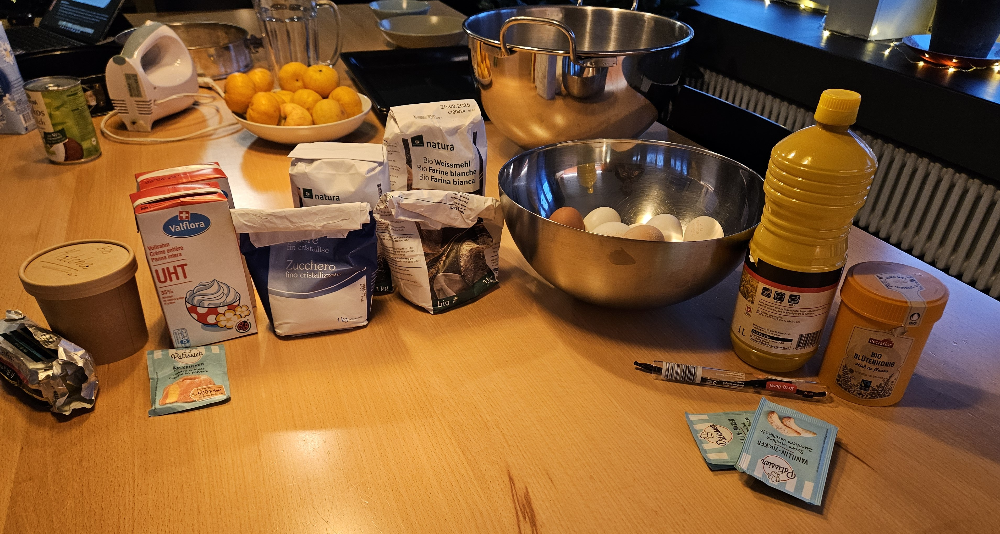
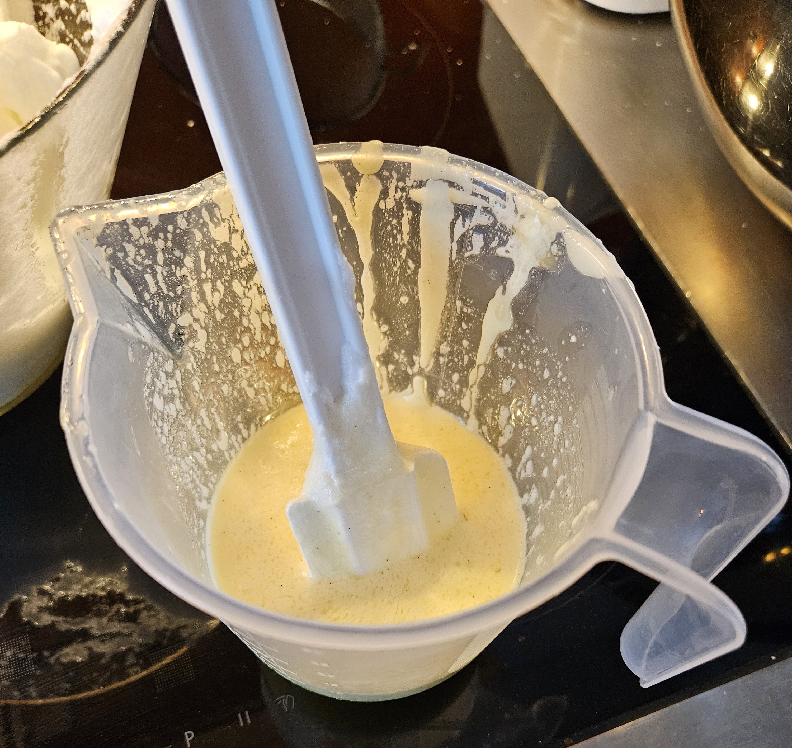
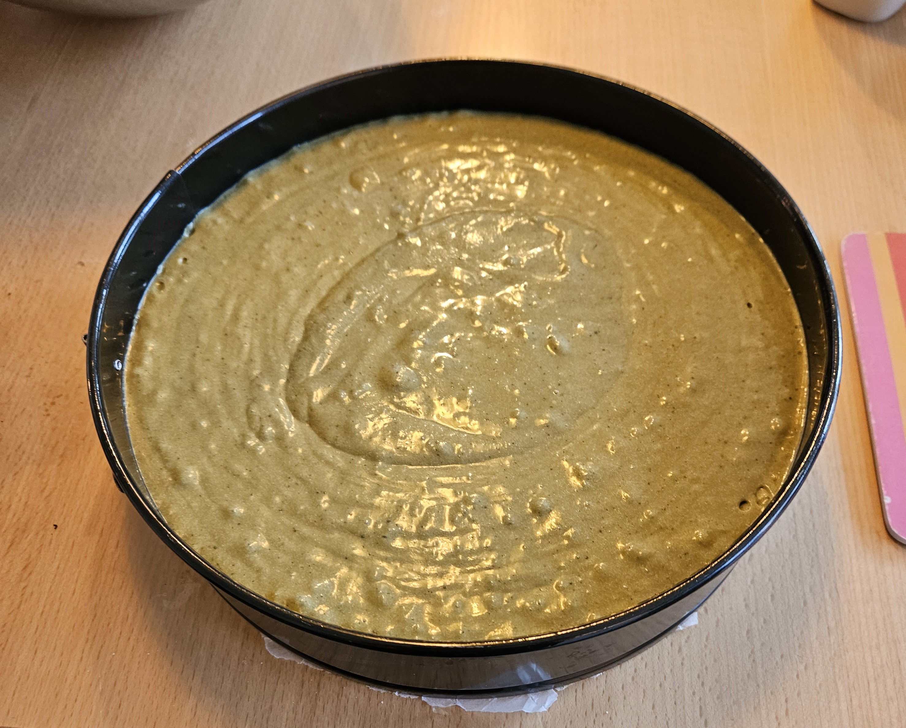

Dry Ingredients:
375g flour
5 tbsp matcha powder
450g white sugar
6g baking powder
3 pinches of salt
2 packs of vanilla sugar
Wet Ingredients:
18 eggs
80 g neutral oil
100g butter
75 g buttermilk
30 g honey
6 g vanilla extract
Today we're making a matcha cake The first steps are to prepare your ingredients, mine are listed above with the exact measurements.
Aswell as preheating your oven to 180 degrees Celsius, preferably with the circulating air setting.
Once we have all of that we start weighing out all our ingredients and separating our egg whites from our yolks. And melting the butter, combining that with our neutral oil.
So once we have that we can start whipping the egg whites with one pack of vanilla sugar and 1/3 of your white/regular sugar, you can use a stand mixer for this, I used a hand mixer since that was the only thing I had on hand. Whip your egg whites to a smooth foamy consistency so it perks up when you remove your whipping utensil.
Now for the yolks, mix them with the remaining sugar, your 3 pinches of salt, honey, buttermilk and vanilla beans or vanilla extract. Mix them thoroughly and make sure no clumps remain.

Once you have that add half of your whipped egg whites and fold them in gently to a smooth but thick consistency.

Then you combine your flour, baking powder and matcha powder before you sift it through a strainer in around 5 - 7 intervals.

Take some of the egg yolk batter and add it to your oil/butter mixture to make it easier to combine with the rest later.
Then gently fold in if you can or mix with your stand mixer/ hand mixer until it lightens up in color and goes from a deep dark forest green to a soft light green with a whipped consistency. Add your neutral oil/butter mixture into the batter and continue mixing it/ whipping it.

If your batter is looking light in color, start folding in the rest of your whipped egg whites and gently, really gently fold it in so the air can alleviate the batter, making it smooth and fluffy.

Into your greased pan, you can choose a square or round, pour your batter into it and let it bake in the oven for 30 to 35 minutes. You may need to adjust temperature accordingly.
My tipp: Bake your cake at 150 degrees for 25 minutes, then on 190 degrees for another ten minutes for a light and fluffy texture.